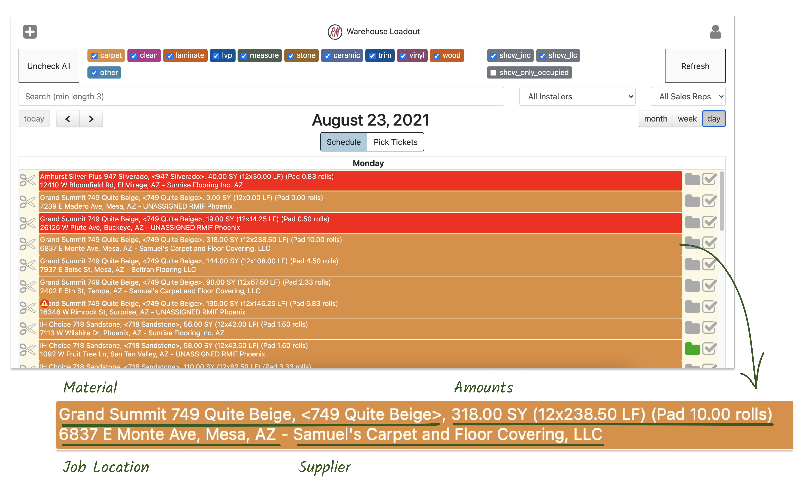
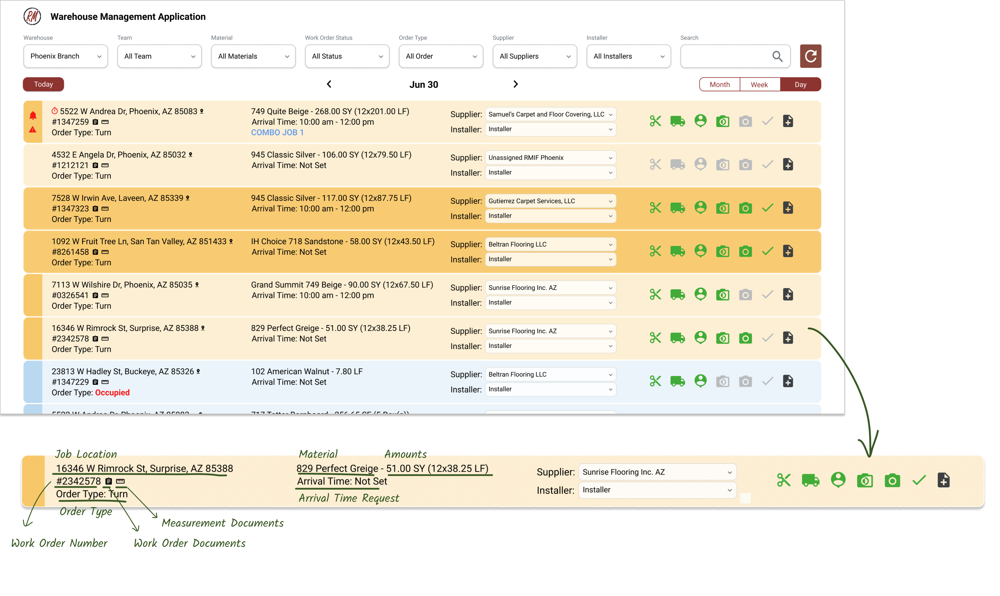
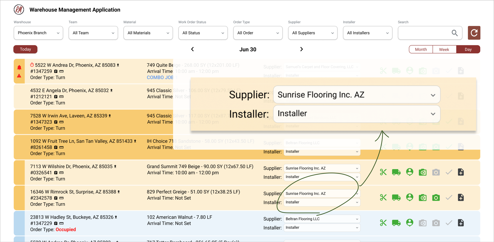
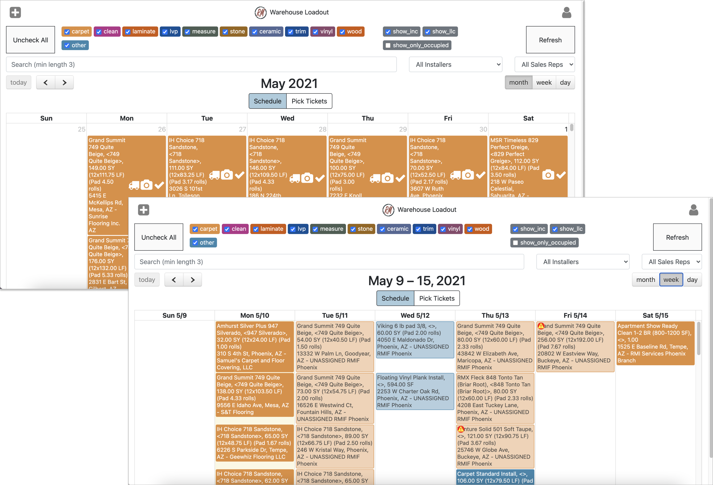
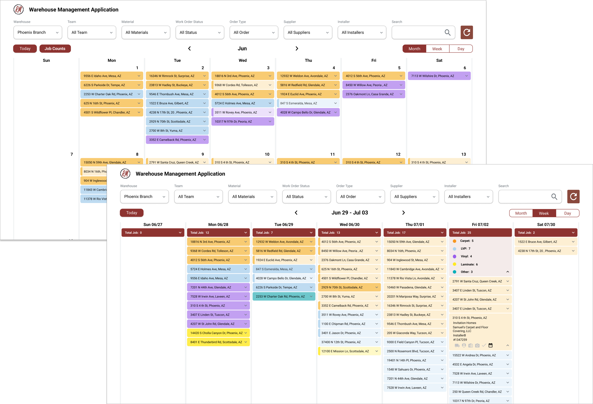
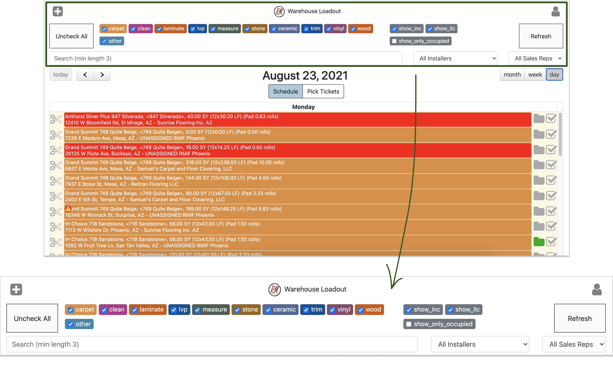

DESIGN
Core Design Improvement
Provide essential information to assist in decisions making

Before.
- Hard for users to locate the relevant information because of the layout structure.
- Users couldn’t get all the information they needed on the page, so they had to switch to other applications.

After.
- Provide key indicators to warehouse staff for selecting installers for the job: Job Location / Job Type / Job Materials / Job Size / Order Type
- Include hyperlinks for convenient access to relevant sites or pages
Offer an easy and simple process for managing suppliers

Before.
- Warehouse staff had to assign suppliers to each job and record them in our internal system
- Required several tedious and time-consuming
- Installer information would just recorded on a paper

After.
- Directly assign suppliers and installers within the warehouse management system
- Add a place to record installer information in the system
- Simplify the steps for assigning and recording the suppliers and installers by using the dropdown selection
Get an overview of warehouses’ workload

Before.
- The monthly and weekly page views were the same as the daily view
- Much more crowded with all the detailed information including

After.
- Listed all the jobs on the monthly view without details, so it will serve as a place for staff to overview warehouses' performance and their workloads
- Added job summary for each day in the monthly view so staff can get an overview of the workload
- Added expanded view for each job so users can get more detailed information
Enhance user experience through interface improvements

Before.
- Only have three filters on the top
- The design of the filter is inconsistent

After.
- Provide more filter options to help them narrow down their job lists and manage the work more efficiently
- These filters are key indicators of their job search: Warehouse / Material / Work Order Status / Order Type / Supplier / Installer